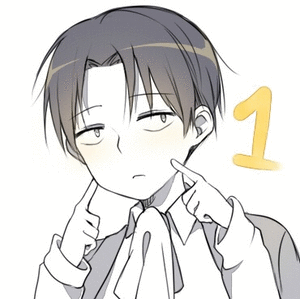

Há cem anos, criaturas gigantes com formatos humanoides repentinamente apareceram no nosso mundo e, por algum motivo desconhecido, eles comem humanos assim que eles encontram um. Estes gigantes, conhecidos como “titãs”, não necessariamente são inteligentes, mas por serem enormes (entre 3 a 15 metros de altura), estarem em grandes quantidades e simplesmente aparecerem, eles basicamente dizimaram a humanidade. As poucas pessoas que sobraram, sobreviveram por terem se estabelecido em um reinado com altíssimas muros (“wall”) formatadas em três círculos concêntricos: Wall Maria, Wall Rose e Wall Sina. Graças a essas muros, os humanos conseguiram sobreviver por cem anos inteiros sem nenhum ataque de titãs dentro das cidades, sendo que os únicos humanos que morriam eram os que entravam no exército como patrulheiro, o grupo que se aventuram pelo lado de fora dos muros para tentar descobrir algo a mais sobre os misteriosos titãs e como eles podem ser eliminados para sempre.
